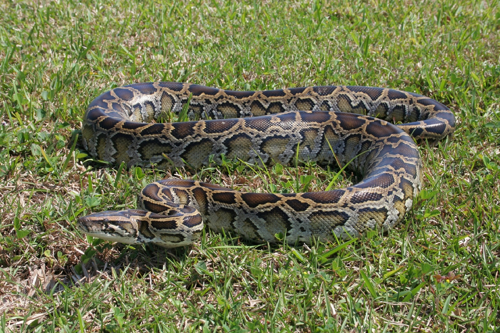

Although my initial trip to Florida was a disaster one benefit was the pleasure of meeting my father's former wife. Let's call her V from here on out. V was a very loving and beautiful person, who also happened to be a very gifted story teller. When I say gifted, I mean the ability to have everyone in a public functions captivated, as she narrated a story. Here are a few small stories she shared with me during my tine in Florida.
Year: 1990. Place: Orlando, Florida. As new native of Florida after taking flight from a chilly New York and an even chiller divorce; solitary became an unpleasant guest. Taking residency in a nearly vacant housing complex, meaning the place was only filled to 10% of its capacity. The location wasn't very pleasant either as woods surrounded the place and the nearest establishments were 5 miles away. You have to drive everywhere, all the time, for every little thing. Apparently, there was small breakout at a prison nearby, setting of a massive manhunt in 20 mile radius. On this particular night V had trouble sleeping and went downstairs to watch TV. Being the only resident on this strip of the complex, it was odd to find the neighbors lights this late at night. Upon further inspection she noticed several men in the house looking extremely out of place. Eventually, eye to eye contact was reached and the men immediately vacated the premises after being discovered. The police force was called upon and it turned out the men took refuge at the empty house for several days. The capture of these men was never confirmed or verified.
Hurricane Andrew devastated Florida in 1992 uprooting trees, destroying homes, flooding streets, and wrecking communities. A byproduct of all this was the effects the hurricane had on establishments in particular those whom nurture and sustain wildlife. Zoos, conservations, and veterinarian offices all suffered heavy losses. Many animals perished and some outright disappeared leaving no trace of existence. To make matters worse a private reptile-breeding facility had all of its animals inadvertently freed into the everglades to fend for themselves. Hundreds of exotic pythons, monitor lizards, cobras, and crocodiles releases into a vast vegetation and immediately becoming the apex predator. Fast-forward a couple years later and python epidemic is taking place all around south and central Florida.
V happened to be visiting her sister in Fort Lauderdale and things got interesting. Earlier that week a crocodile attacked, killed, and devoured a child in the neighborhood. Notices were being placed by police and ASPCA for residents to look their door and windows. Alerts also warned inhabitant to carefully watch small pets and children, the elderly people, and to be on alert. It became apparent V's sister refused to heed these warning as her doors, windows, and garage were left open, frequently. The annual family get together was taking place and the setup was happening. Constant trips to Walmart and back seemed to occupy all their attention, so securing access was not a priority. On the very last trip they arrived home to an abnormally quiet house. Usually, her small dog could be head barking and would greet them at the door. This time, nothing. To their honor they walked into the house to see a large Burmese python digesting what happened to be her prized canine in her living room. An estimation of 30,000 pythons are alleged to be living in the Everglades now, and over 100,000 exist statewide.
Hooky. I'm similar to such great practice. But things can go sideways if you don't plan accordingly. You can get caught, arrested and possibly die. V was a solid student who never missed a day and thought school breaks were torture. I now introduce you to peer pressure thing the makes the intelligent rather stupid by impressing you guessed it, your peers. V's friends wanted to enjoy the nice weather so a trip to the waterfall was an order. Apprehensive at first, V went against her intuition just to gain acceptance. Everything was going smooth while playing hooky, that's until she was pressured to jump from the cliff side waterfalls into the river. Problem was V couldn't swim, in fact she had never been in water deeper than three feet. But things have to happen sometime so she jumped. Big mistake while in freefall immediate regret flooded her mind as did the water a few seconds later. Gasping for air, sinking to her demise, and regret in the mind all took place simultaneously. She awoke to friends screaming and yelling for her to awaken. It turned out after she jumped she didn't emerge for almost a minute and she was rescued by her peer, struggling to regain consciousness for some time. V has affirmed that until this day that was the worst decision she made in her life.